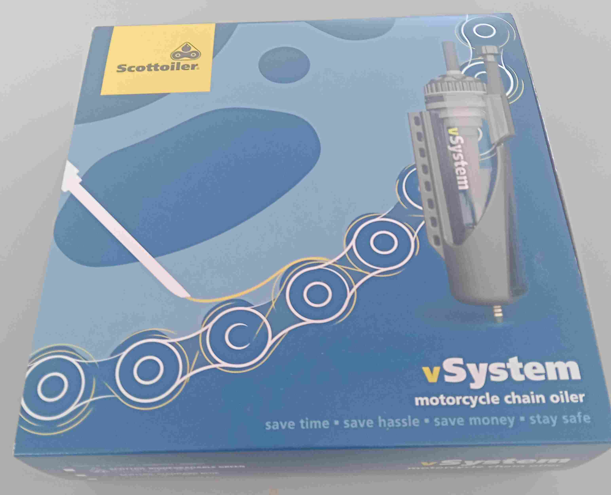

SCOTTOILER REVIEW
Scottoiler V System

The Scottoiler system works by using the vacum created by the running engine to open a valve in the oil resevoir allowing oil to flow from the resevoir, through a feeder tube, and on to the drive chain. The rate of flow is controlled by rotating a lever built in to the top of the resevoir and refilling the resevoir can be done with a tube supplied in the kit.
The kit also contains all of the tubes, clips, and cable ties required to attach the system to the bike and make it operational. Nothing else is required.
I attempted to buy this product in Panama however none of the bike shops that I visited stocked it or anything similar. Another option I looked at was to order it on Amazon or from the United States and have it posted to me here, however both options were extremely problematic.
I contacted the company directly at their base in my home city of Glasgow, Scotland, they were extremely helpful and organised for this to be sent by courier to me here in Panama city. To save weight and thus additional postage costs, the company agreed to sell me the system without oil and they were happy to do so. They also were happy to sell it to me minus the UK VAT as I would have to pay import duty when it arrived in Panama.
This particular system is the latest variation of the V system that I had on my previous Royal Enfield Himalayan and as before it was very easy to install and get working. As I did not have any oil I used SAE 90 gear oil which I find is an adequate substitute for the recommended oil.
I have now used it on my new bike for 2,000 miles (3,200 km) without any problems.
I have used Scottoiler systems on my bikes for about 20 years or so and I have never had any problems with them. The main reason that I use them is that I have found that they extend the life of the drive chain by thousands of miles as opposed to when not using these systems. When I bought my Kawasaki ZZR 1200 I fitted one and I put on new chain and sprockets at 23,000 miles. 10 years later when I part exchanged it for my first Himalayan it had done 46,000 miles the chain adjusters on the bike were only half way to maximum adjustment.
This is a product that having used over may years I have no hesitation in recommending to any biker looking for an automatic chain oiling system to fit to their bike.
I can attest to the helpfulness of the company when ordering from them and I can also attest to their high level of customer support.